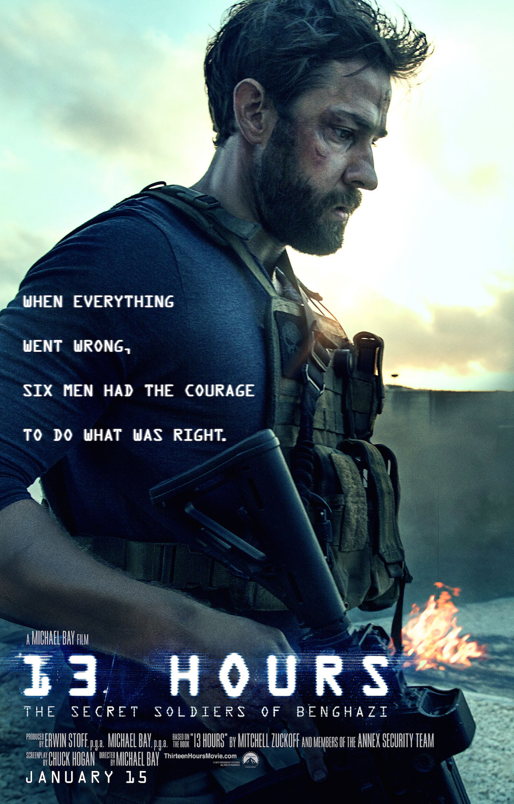

Back to Main Page
13 Hours: Secret Soldiers of Benghazi
On Sept. 11, 2012, Islamic militants attack the U.S. Consulate in Benghazi, Libya, killing Ambassador J. Christopher Stevens and Sean Smith, an officer for the Foreign Service. Stationed less than one mile away are members (James Badge Dale, John Krasinski, Max Martini) of the Annex Security Team, former soldiers assigned to protect operatives and diplomats in the city. As the assault rages on, the six men engage the combatants in a fierce firefight to save the lives of the remaining Americans.
Cast
- John Krasinki as Jack Silva
- James Badge Dale as Rone
- Pablo Schreiber as Kris 'Tanto' Paronto
